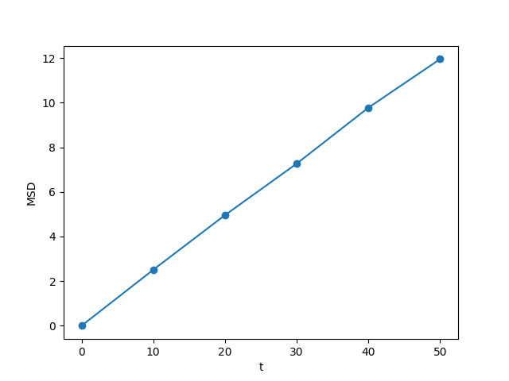
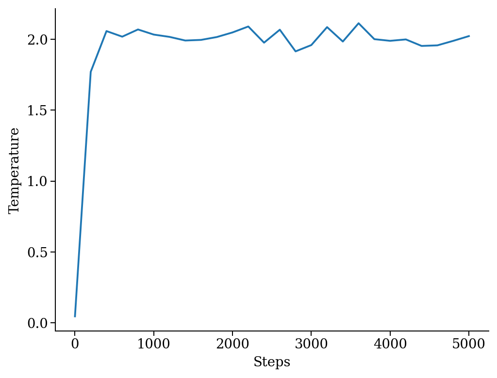

Table of Contents
Basics
Atooms provides a high-level interface to the main objects of particle-based simulations. It mostly focuses on classical molecular dynamics and Monte Carlo simulations, but it is not limited to that. It can be used to simulate and analyze lattice models such as TASEP or kinetically constrained models.
We will start by having a look at the basic objects of particle-based simulations and how to store them on a file.
Particles' properties
Particles' positions are stored as numpy arrays, but we can pass a simple list with x, y, z coordinates when we create them
from atooms.system.particle import Particle particle = Particle(position=[1.0, 0.0, 0.0]) print(particle.position, type(particle.position))
[ 1. 0. 0.] <class 'numpy.ndarray'>
Particles can live in an arbitrary number of spatial dimensions
particle = Particle(position=[1.0, 0.0, 0.0, 0.0, 0.0]) print(len(particle.position))
5
By default, particles have a few more properties such as velocity, chemical species, mass and radius. They can all be altered at will or even set to None.
import numpy particle = Particle(position=[1.0, 0.0, 0.0], velocity=[1.0, 0.0, 0.0]) particle.species = 'Na' particle.position += numpy.array([0.0, 1.0, 1.0]) particle.velocity *= 2 particle.radius = None # point particles have no radius print(particle)
Particle(species=Na, mass=1.0, position=[ 1. 1. 1.], velocity=[ 2. 0. 0.], radius=None)
You may want to add physical properties to particles, like charge or whatever. Of course, in python you can do it very easily
particle.charge = -1.0
This won't break anything!
Dealing with velocities
You may not need velocities at all (for instance because you are working with Monte Carlo simulations) but if you do, atooms provides a few useful methods and functions. For instance, you can assign velocity from a Maxwell-Boltzmann distribution at a temperature T.
particle = [Particle() for i in range(1000)] for p in particle: p.maxwellian(T=1.0) ekin = sum([p.kinetic_energy for p in particle]) ndim = 3 ndof = len(particle) * ndim T = 2.0 / ndof * ekin print(T)
0.944755026085
Doing so will leave a non-zero total momentum, but we can fix it (note that all masses are equal)
from atooms.system.particle import fix_total_momentum, cm_velocity print(cm_velocity(particle)) fix_total_momentum(particle) print(cm_velocity(particle))
[-0.03078045 0.05653126 0.01857607] [ 1.31006317e-17 7.77156117e-18 -2.07056594e-17]
Boundary conditions
To avoid major finite size effects, we enclose particles in a cell with periodic boundary conditions. By convention, the cell origin is at the origin of the reference frame.
from atooms.system.cell import Cell L = 2.0 cell = Cell(side=[L, L, L]) print(cell.side, cell.volume)
[ 2. 2. 2.] 8.0
Atooms provides means to fold particles back in the "central" simulation cell, i.e. the one centered at the origin at the reference frame. For simplicity, let us work with particles in 1d.
cell = Cell(side=1.0) particle = Particle(position=2.0) # particle outside the central cell particle.fold(cell) print(particle.position)
0.0
The particle is now folded back at the origin.
A related method returns the nearest periodic image of a given particle with respect to another particle
particle_1 = Particle(position=-0.45) particle_2 = Particle(position=+0.45) image = particle_1.nearest_image(particle_2, cell, copy=True) print(image)
Particle(species=A, mass=1.0, position=0.55, velocity=[ 0. 0. 0.], radius=0.5)
The system object
Objects like particles and the simulation cell can be gathered in an instance of a god-like class called System. The system contains all the relevant physical objects of your simulation. Reservoirs like thermostats, barostats and particle reservoirs can be added as well. These objects are placeholders for thermodynamic state variables like temperature, pressure or chemical potential. Any class meant to describe the interaction between particles also belongs to the system.
Let us build a system with a few particles in a cell and use the system methods to modify the system density and temperature. Note that density and temperature are python properties and thus modify the attributes of particles and cell under the hoods using the set_density and set_temperature methods respectively
from atooms.system import System system = System(particle=[Particle() for i in range(100)], cell=Cell([10.0, 10.0, 10.0])) system.density = 1.2 # equivalent to system.set_density(1.2) system.temperature = 1.5 # equivalent to system.set_temperature(1.2) print(system.density, system.temperature)
1.2 1.5
Note that the system temperature is the kinetic one and need not coincide with the one of the thermostat.
from atooms.system import Thermostat system.thermostat = Thermostat(temperature=1.0) system.temperature = 1.5 # equivalent to system.set_temperature(1.2) print(system.temperature, system.thermostat.temperature)
1.5 1.0
Interaction and backends
Classical particles interact with each other via a potential \(u(\{r_i\})\), where \(\{r_i\}\) is the set of particles' coordinates. Atooms relies on third-party efficient backends written in C, Fortran or CUDA to actually compute the interaction between the particles. Here we will use the LAMMPS backend, see Molecular dynamics with LAMMPS for further details. It accepts a string variable that defines the interaction potential using the LAMMPS syntax, see https://lammps.sandia.gov/doc/pair_style.html, and stores a reference to the system object of which we want to compute the energy.
As proof of principle, we compute the interaction energy between two Lennard-Jones particles
from atooms.system import System, Particle, Cell from atooms.backends.lammps import LAMMPS x = 1.122 # Minimum of the potential system = System(particle=[Particle(position=[0.0, 0.0, 0.0]), Particle(position=[x, 0.0, 0.0])], cell=Cell([10.0, 10.0, 10.0])) cmd = """ pair_style lj/cut 2.5 pair_coeff 1 1 1.0 1.0 2.5 """ # The backend will add an interaction to the system backend = LAMMPS(system, cmd) # Compute and get the potential energy # The cache option allows to get the potential energy without recalculating it print(system.potential_energy(), system.potential_energy(cache=True))
-0.99999388 -0.99999388
The energy and forces are stored in system.interaction.energy and system.interaction.forces.
Trajectory files
To write the state of the system to a file, we use a Trajectory class. Trajectories are composed of multiple frames, each one holding the state of the system at a given step during the simulation. We use a basic xyz format to write the state of the system and then parse the trajectory file we produced to see how it looks like.
from atooms.trajectory import TrajectoryXYZ system = System(particle=[Particle() for i in range(4)], cell=Cell([10.0, 10.0, 10.0])) # Open the trajectory in write mode and write the state of the system # at step 0 with TrajectoryXYZ('test.xyz', 'w') as th: th.write(system, step=0) # Read the xyz file back as plain text with open('test.xyz') as fh: print(fh.read())
4 step:0 columns:id,pos dt:1 cell:10.0,10.0,10.0 A 0.000000 0.000000 0.000000 A 0.000000 0.000000 0.000000 A 0.000000 0.000000 0.000000 A 0.000000 0.000000 0.000000
Note that trajectories are file-like objects: they must be opened and closed, preferably using the with syntax.
Of course, we can write multiple frames by calling write() repeatedly.
with TrajectoryXYZ('test.xyz', 'w') as th: for i in range(3): th.write(system, step=i*10)
To get the system back we read the trajectory. Trajectories support iteration and indexing, just like lists.
with TrajectoryXYZ('test.xyz') as th: # First frame system = th[0] print(system.particle[0].position, system.cell.side) # Last frame system = th[-1] print(system.particle[0].position, system.cell.side) # Iterate over all frames for i, system in enumerate(th): print(th.steps[i], system.particle[0].position)
[ 0. 0. 0.] [ 10. 10. 10.] [ 0. 0. 0.] [ 10. 10. 10.] 0 [ 0. 0. 0.] 10 [ 0. 0. 0.] 20 [ 0. 0. 0.]
Particles on a lattice
Suppose we want to simulate a system where particles can only be located at discrete sites, say a one-dimensional lattice or perhaps a network with a complex topology. Particle positions can then be described as plain integers, holding the index of the site on which a particle is located. We create such a system and then write it to a file in xyz format
import numpy from atooms.system import System, Particle # Build model system with integer coordinates particle = [Particle() for i in range(3)] particle[0].position = 0 particle[1].position = 1 particle[2].position = 2 system = System(particle=particle) # Write xyz trajectory from atooms.trajectory import TrajectoryXYZ with TrajectoryXYZ('test.xyz', 'w') as th: th.write(system, 0) # Read the xyz file back as plain text with open('test.xyz') as fh: print(fh.read())
3 step:0 columns:id,pos dt:1 A 0 A 1 A 2
Everything went fine. However, we have to tweak things a bit when reading the particles back, to avoid positions being transformed to arrays of floats instead of integers. This can be done with the help of a callback that transforms the system accordingly as we read the trajectory.
# Read file as an xyz trajectory with TrajectoryXYZ('test.xyz') as th: # We add a callback to read positions as simple integers # Otherwise they are read as numpy arrays of floats. def modify(system): for p in system.particle: p.position = int(p.position[0]) p.velocity = None p.radius = None return system th.add_callback(modify) for p in th[0].particle: print(p)
Our particles have now integer coordinates. Note that, on passing, we have set to None velocities and radii as they are not relevant in this case.
Simulations
Within atooms, a simulation is a high-level class that encapsulates some common tasks and provides a consistent interface to the user, while backends are classes that actually make the system evolve. Here, we implement a minimal backend to run a simulation.
At a very minimum, a backend is a class that provides
- a system instance variable, which should (mostly) behave like
atooms.system.System. - a run() method, which evolves the system for a prescribed number of steps (passed as argument)
Optionally, the backend may hold a reference to a trajectory class, which can be used to checkpoint the simulation or to write configurations to a file. This is however not required in a first stage.
A minimal simulation backend
We set up a bare-bones simulation backend building on the native System class
from atooms.system import System class BareBonesBackend(object): def __init__(self): self.system = System() def run(self, steps): for i in range(steps): pass # The backend is created and wrapped by a simulation object. # Here we first call the run() method then run_until() from atooms.simulation import Simulation backend = BareBonesBackend() simulation = Simulation(backend) simulation.run(10) simulation.run_until(30) assert simulation.current_step == 30 # This time we call run() multiple times simulation = Simulation(backend) simulation.run(10) simulation.run(20) assert simulation.current_step == 30 # Increase verbosity to see a meaningful log from atooms.core.utils import setup_logging setup_logging(level=20) simulation = Simulation(backend) simulation.run(10)
# # atooms simulation via <__main__.BareBonesBackend object at 0x7ff54d0527f0> # # version: 1.9.1+1.5.0-132-gfe9bc7-dirty (2019-04-12) # atooms version: 1.9.1+1.5.0-132-gfe9bc7-dirty (2019-04-12) # simulation started on: 2019-05-17 at 17:36 # output path: None # backend: <__main__.BareBonesBackend object at 0x7ff54d0527f0> # # target target_steps: 10 # # # starting at step: 0 # # simulation ended successfully: reached target steps 10 # # final steps: 10 # final rmsd: 0.00 # wall time [s]: 0.00 # average TSP [s/step/particle]: nan # simulation ended on: 2019-05-17 at 17:36
Simple random walk
We implement a simple random walk in 3d. This requires adding code to the backend run() method to actually move the particles around.
We start by building an empty system. Then we add a few particles and place them at random in a cube. Finally, we write a backend that displaces each particle randomly over a cube of prescribed side.
import numpy from atooms.system import System # There are no particles at the beginning system = System() assert len(system.particle) == 0 # Add particles from atooms.system.particle import Particle from random import random L = 10 for i in range(1000): p = Particle(position=[L * random(), L * random(), L * random()]) system.particle.append(p) class RandomWalk(object): def __init__(self, system, delta=1.0): self.system = system self.delta = delta def run(self, steps): for i in range(steps): for p in self.system.particle: dr = numpy.array([random()-0.5, random()-0.5, random()-0.5]) dr *= self.delta p.position += dr
The Simulation class provides a callback mechanism to allow execution of arbitrary code during the simulation. This can be used to write logs or particle configurations to file, or to perform on-the-fly calculations of the system properties. Callbacks are plain function that accept the simulation object as first argument. They are called at prescribed intervals during the simulation.
Here we measure the mean square displacement (MSD) of the particles to make sure that the system displays a regular diffusive behavior \(MSD \sim t\)
from atooms.simulation import Simulation simulation = Simulation(RandomWalk(system)) # We add a callback that computes the MSD every 10 steps # We store the result in a dictionary passed to the callback msd_db = {} def cbk(sim, initial_position, db): msd = 0.0 for i, p in enumerate(sim.system.particle): dr = p.position - initial_position[i] msd += numpy.sum(dr**2) msd /= len(sim.system.particle) db[sim.current_step] = msd # We will execute the callback every 10 steps simulation.add(cbk, 10, initial_position=[p.position.copy() for p in system.particle], db=msd_db) simulation.run(50) # The MSD should increase linearly with time time = sorted(msd_db.keys()) msd = [msd_db[t] for t in time] print(time, msd) import matplotlib.pyplot as plt plt.cla() plt.plot(time, msd, '-o') plt.xlabel("t") plt.ylabel("MSD") plt.savefig('msd.png')
The MSD as a function of time should look linear. 
Molecular dynamics with LAMMPS
Atooms provides a simulation backend for LAMMPS, an efficient and feature-rich molecular dynamics simulation package.
The backend accepts a string variable containing regular LAMMPS commands and initial configuration to start the simulation. The latter can be provided in any of the following forms:
- a System object
- a Trajectory object
- the path to an xyz trajectory
In the last two cases, the last configuration will be used to start the simulation.
Here we we use the first configuration of an existing trajectory for a Lennard-Jones fluid
import atooms.trajectory as trj from atooms.backends.lammps import LAMMPS import os system = trj.TrajectoryXYZ('../../data/lj_N1000_rho1.0.xyz')[0] cmd = """ pair_style lj/cut 2.5 pair_coeff 1 1 1.0 1.0 2.5 neighbor 0.3 bin neigh_modify check yes timestep 0.002 """ backend = LAMMPS(system, cmd)
We now wrap the backend in a simulation instance. This way we can rely on atooms to write thermodynamic data and configurations to disk during the simulation: we just add the write_config() and write_thermo() functions as observers to the simulations.
You can add your own functions as observers to perform arbitrary manipulations on the system during the simulation. Keep in mind that calling these functions causes some overhead, so avoid calling them at too short intervals.
from atooms.simulation import Simulation from atooms.system import Thermostat from atooms.simulation.observers import write_thermo, write_config # We create the simulation instance and set the output path sim = Simulation(backend, output_path='lammps.xyz') # Just store a reference to the trajectory class you want to use sim.trajectory_class = trj.TrajectoryXYZ # Write configurations every 500 steps in xyz format sim.add(write_config, 500) # Write thermodynamic properties every 500 steps sim.add(write_thermo, 500)
We add a thermostat to keep the system temperature at T=2.0 and run the simulations for 10000 steps.
backend.system.thermostat = Thermostat(temperature=2.0, relaxation_time=0.1)
sim.run(10000)
Note that we use atooms Thermostat object here: the backend will take care of adding appropriate commands to the LAMMPS script.
We have a quick look at the kinetic temperature as function of time to make sure the thermostat is working
set xl 'Steps' set yl 'Temperature' set border 3 set xtics nomirror set ytics nomirror plot 'lammps.xyz.thermo' u 1:2 noti w lp lc rgb 'red' pt 7, 2 noti lc rgb 'black'

We can use the postprocessing package to compute the radial distribution function
from atooms.postprocessing import api api.gr('lammps.xyz')
set xl 'r' set yl 'g(r)' set border 3 set xtics nomirror set ytics nomirror plot 'lammps.xyz.pp.gr' u 1:2 noti w lp lc rgb 'red' pt 7

Energy minimization with LAMMPS
It is possible to minimize the energy of a system to determine its so-called inherent structure using LAMMPS as a backend. To achieve this, atooms defines an Optimization class, which behaves mostly as Simulation except that it stops when the mean square total force
\[
W=\frac{1}{N}\sum_i |f_i|^2
\]
is lower than a given tolerance.
from atooms.trajectory import TrajectoryXYZ from atooms.optimization import Optimization from atooms.backends.lammps import EnergyMinimization cmd = """ pair_style lj/cut 2.5 pair_modify shift yes pair_coeff 1 1 1.0 1.0 2.5 """ system = TrajectoryXYZ('../../data/lj_N256_rho1.0.xyz')[0] bck = EnergyMinimization(system, cmd) opt = Optimization(bck, tolerance=1e-10) opt.run()
We check that \(W\) is lower than the requested tolerance
e_final = system.potential_energy(per_particle=True) w_final = system.force_norm_square(per_particle=True) print('Energy={}, mean square force={:.2g}'.format(e_final, w_final))
Energy=-6.8030584, mean square force=3.6e-11
Trajectories
Custom trajectory output
We can customize the format of trajectory files using the fields variable. It contains a list of the particle properties to be written to the trajectory. For this simple example we use again the xyz trajectory format.
We add a charge property to each particle and then instruct the trajectory to write it along with the position
from atooms.system import System, Cell, Particle system = System(particle=[Particle() for i in range(3)], cell=Cell([10.0, 10.0, 10.0])) for p in system.particle: p.charge = -1.0 with TrajectoryXYZ('test.xyz', 'w', fields=['position', 'charge']) as th: th.write(system, step=0) with open('test.xyz') as fh: print(fh.read())
3 step:0 columns:position,charge dt:1 cell:10.0,10.0,10.0 0.000000 0.000000 0.000000 -1.0 0.000000 0.000000 0.000000 -1.0 0.000000 0.000000 0.000000 -1.0
The fields list can contain any particle property, even those defined dynamically at run time, such as the charge variable above which is not a predefined particle property!. When reading back the trajectory, the charge property is automatically recognized and added to the particle.
with TrajectoryXYZ('test.xyz') as th: system = th[0] print(system.particle[0].charge)
-1.0
Conversion between trajectory formats
Atooms provides means to convert between trajectory various formats. At a very basic level, this requires opening the original trajectory for reading and the new one for writing using the desired trajectory class. Here we convert an xyz trajectory in a format suitable for the LAMMPS package
from atooms.trajectory import TrajectoryLAMMPS with TrajectoryXYZ('test.xyz') as th_inp,\ TrajectoryLAMMPS('test.lammps', 'w') as th_out: for i, system in enumerate(th_inp): th_out.write(system, th_inp.steps[i])
The convert() function wraps the conversion in a more convenient interface
from atooms.trajectory import convert convert(TrajectoryXYZ('test.xyz'), TrajectoryLAMMPS, 'test.lammps')
There are several optional parameters that allows to customize the trajectory output, see the function signature for more details.
Finally, the trj.py script installed by atooms allows to quickly convert trajectories on the command-line, which is actually the most frequent use case
trj.py convert -i xyz -o lammps test.xyz test.lammps
Although the script will do its best to guess the appropriate trajectory formats, it is best to provide the input and output trajectory formats via the -i and -o flags explicitly.
Add and modify trajectory properties on the fly with callbacks
"Callbacks" are functions used to modify the properties of a trajectory on the fly. They accept a System instance as first positional argument, along with optional extra positional and keyword arguments, and return a modified System.
As an example, suppose your trajectory did not provide any information about the cell side. You can add the information dynamically to all System objects read from the trajectory using the following callback
from atooms.system import Cell def fix_missing_cell(system, side): system.cell = Cell(side) return system
Then we add the callback to the trajectory and provide the cell side (here L=10 along each dimensions) as argument. Reading the trajectory is then done as usual.
from atooms.trajectory import TrajectoryXYZ with TrajectoryXYZ('test.xyz') as th: th.add_callback(fix_missing_cell, [10., 10., 10.]) for system in th: print(system.cell.side)
[10. 10. 10.] [10. 10. 10.]
Extend trajectory classes
Suppose you have a trajectory that looks almost like xyz, but differs in some way. You may want to customize the xyz trajectory format, so that your code can process the trajectory without manual intervention.
For instance, your xyz file is test.xyz but the cell side information is stored in a separate file test.xyz.cell. We can proceed as before
from atooms.system import Cell file_inp = 'test.xyz' with open(file_inp + '.cell') as fh: # Assume the cell file contains a string Lx Ly Lz # where Lx, Ly, Lz are the sides of the orthorombic cell side = [float(L) for L in fh.read().split()] with TrajectoryXYZ(file_inp) as th: th.add_callback(fix_missing_cell, side)
As a more permanent solution, you can define your own custom trajectory by subclassing TrajectoryXYZ. First, parse the cell information during the initialization stage (read_init()).
from atooms.system import Cell from atooms.trajectory import TrajectoryXYZ class TrajectoryCustomXYZ(TrajectoryXYZ): def read_init(self): super().read_init() with open(self.filename + '.cell') as fh: self._side = [float(L) for L in fh.read().split()]
Then modify the read_sample() method, which reads a given frame of the trajectory.
def read_sample(self, frame): system = super().read_sample() system.cell = Cell(self._side) return system
Here we have assumed that the cell side is the same for all frames. The code would have to be adjusted to the more general case of a fluctuating cell.